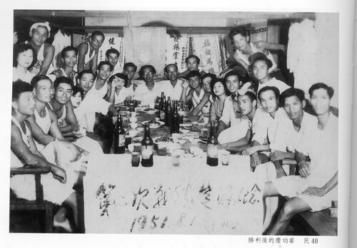
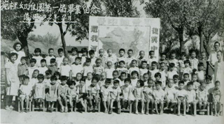
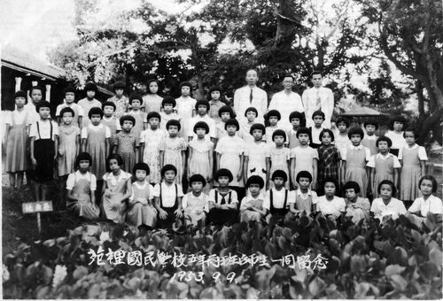
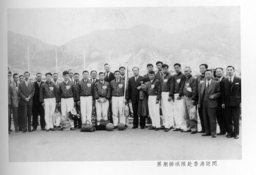
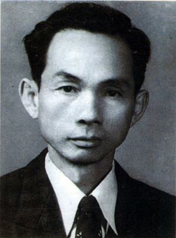

YUANLI ELEMENTARY SCHOOL · HISTORY
苑裡國小歷史沿革
民國四十年至四十九年（1951–1960）
記錄黑潮排球隊、校務發展、校長更迭與校園生活的歷史片段。
1951民國四十年［第48屆］
※ 民國四十年六月黑潮排球隊參加苗栗縣第二屆排球錦標賽獲得冠軍

※ 民國四十年六月黑潮排球隊參加苗栗縣第一屆國教排球錦標賽獲得冠軍
※ 民國四十年八月黑潮排球隊 ( 時名苗栗縣隊 ) 參加全省第二屆國校教職員排球賽獲得亞軍
※ 民國四十年九月黑潮排球隊 ( 時名苗栗縣隊 ) 參加全省第三屆排球錦標賽獲得亞軍
※ 民國四十年十月黑潮排球隊 ( 時名苗栗縣隊 ) 參加中部五縣市軍民排球錦標賽獲得殿軍
1952民國四十一年［第49屆］
1953民國四十二年［第50屆］
※ 七月苑裡國民學校幼稚部第一屆畢業

※ 民國四十二年七月黑潮排球隊 ( 時名苗栗縣隊 ) 參加全省第四屆國校教職員排球賽獲得冠軍
※ 民國四十二年八月黑潮排球隊 ( 時名苗栗縣隊 ) 參加全省第五屆排球錦標賽獲得季軍
※ 大水溝北側原設有庭院水池 , 陳校長興建一座木造水車引水入池 , 增添美景 .

1954民國四十三年［第51屆］
1955民國四十四年［第52屆］
※ 民國四十四年十月黑潮排球隊 ( 時名苗栗縣隊 ) 參加第十屆全省運動大會獲得殿軍
1956民國四十五年［第53屆］
※ 民國四十五年二月黑潮排球隊與香港友誼賽獲得二勝一負的成績

1957民國四十六年［第54屆］
※ 民國四十六年九月第十九任校長湯運和就任

1958民國四十七年［第55屆］
1959民國四十八年［第56屆］
1960民國四十九年［第57屆］
※ 民國四十九年九月：設苑坡分校（民國五十年獨立為林森國民學校）